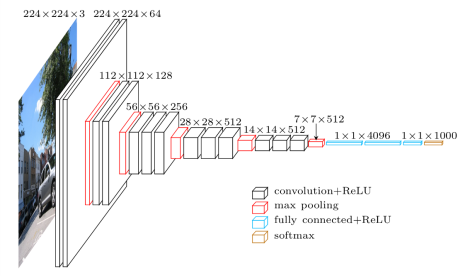

作为演示模型，SaClassDemo模型可以应用于简单的图像分类任务。
As a demo model, SaClassDemo can be applied to simple image classification task.
对于数据的预处理，首先将图像Resize到28x28的尺寸，再进行简单的归一化处理。 （这要求数据集中图像的尺寸不能太大，而且必须为RGB三通道）
For the processing of the dataset, the first step is to resize the image to size of 28*28 and then perform a simple normalization. (This requires that the size of image is not too large and it must be RGB channels)
这个模型是仿照标准VGG模型实现的，使用了非常标准的5层卷积-降采样+分类器结构。
This model is implemented after the standard VGG model, using a very standard 5-layer convolution-downsampling + classifier structure.

torch == 1.7.0
torchvision == 0.8.0任务类型 Task Type: 图像分类 Image Classification
预训练文件 Pre-trained Model: 无 None
预算（GPU个数）GPU Budget: 0
注意：由于此模型应用的图像尺寸相对较小，且默认使用自适应batch-size，如果使用GPU训练，会导致batch-size过大而使模型极难收敛，所以推荐不使用GPU
Note: Since the image size applied in this model is relatively small and by default auto-batch is used, if the GPU is deployed for training, the batch-size will be too large and the model will be extremely difficult to converge, so it is not recommended to use GPU.
自动调参 Auto-tuning: 是 Yes
训练次数 Trial Count: 2
注意：此模型用于演示自动调参功能，在模型中使用了CategoricalKnob，所以必须选择开启自动调参
Note: This model is used to demonstrate Singa-auto's auto-tuning function, and CategoricalKnob is used in the model, so auto-tuning must be selected.
GPUs: 0
CPUs: 2
Mem/G: 4预测输入与输出 Inference input and output:
输入：文件，与训练数据集分布一致的常规图像文件
输出：字符串，分类结果（此模型直接返回类名）
Input: file, a regular image file with the same distribution as the training set
Output: string, classification results (this model returns class name directly)